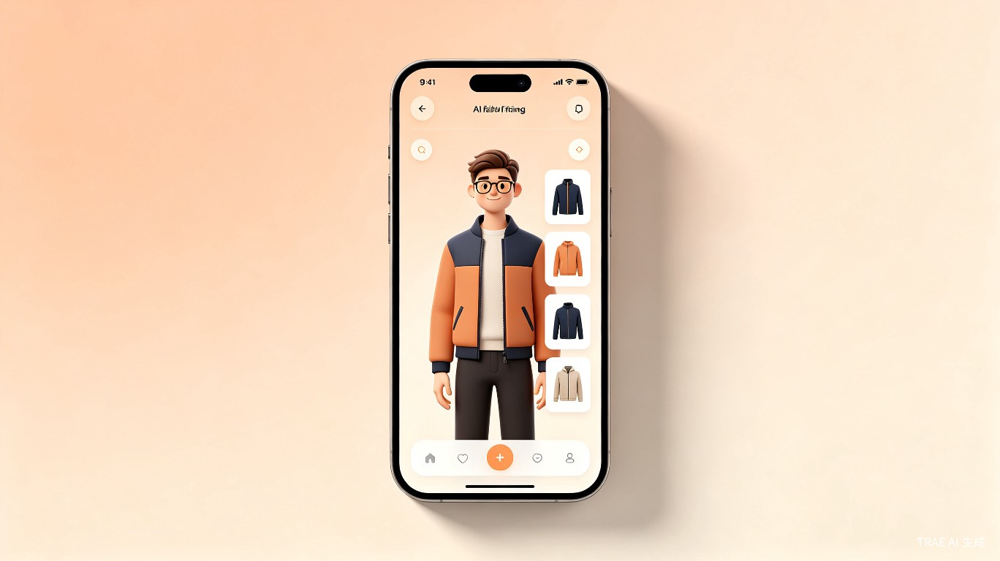
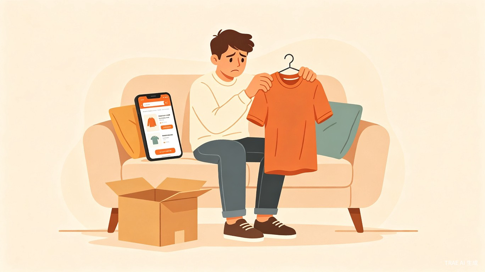

用AI自建模特完成服装试穿，让网购衣物不再靠猜
AI试穿是一款面向网购用户的移动应用，核心功能是让用户通过AI生成与自身身材、面貌相似的虚拟模特，在线试穿任意衣物，提前看到上身效果。产品形态为App，覆盖iOS与Android平台。
传统网购衣物的痛点在于无法现场试穿。用户只能依赖商品图和尺码表做判断，实际收货后常常出现版型不合、颜色偏差、整体搭配不协调等问题，导致频繁的退货换货。AI试穿通过虚拟试穿技术，把"试穿"环节前置到下单之前，降低决策风险。

产品面向所有有网购衣物、鞋帽需求的消费者，尤其是以下高价值人群：
浏览电商平台时，看到一件感兴趣的连衣裙，打开AI试穿App，让虚拟模特试穿，观察版型与长度是否合适。
准备购买一双新鞋，担心与某条裤子的搭配效果，通过虚拟模特预览整体穿搭。
换季大促期间快速筛选多件候选商品，用批量试穿功能在短时间内对比不同款式的上身效果。
为特定场合（面试、约会、婚礼）挑选服装，需要确认正式度和整体气质是否达标。
用户在现有网购流程中面临的核心问题可以归纳为三点：
AI试穿的核心商业价值在于降低退货换货成本。服装类目是电商退货率最高的品类之一，行业平均退货率可达30%-50%。每一次退货都意味着物流、仓储、质检、重新上架的叠加成本。通过让用户在下单前获得更准确的合身度与搭配预期，AI试穿能够有效减少"预期不符"型退货，为平台、商家和消费者创造多方共赢。
对于消费者而言，AI试穿显著缩短了从"发现商品"到"做出购买决策"的时间。用户无需在海量评价中寻找与自己身材相近的参考，也不必在多个尺码之间犹豫下单。同等的购物时长内，用户可以完成更多次试穿和对比，提升购物效率。
除了解决功能性痛点，AI试穿还带来了购物体验的升级。虚拟试穿本身具有一定的娱乐性和探索性，用户可以尝试平时不敢挑战的风格、颜色和搭配，发现新的穿搭可能。这种"先试后买"的确定性，也能增强用户对平台和品牌的信任感。
| 功能模块 | 功能描述 | 用户价值 |
|---|---|---|
| 模特创建 | 用户上传几张全身照，AI自动生成3D虚拟模特，支持调整身高、体重、肤色、发型等参数 | 建立与用户自身高度相似的试穿基准 |
| 单品试穿 | 输入商品链接或上传商品图，AI将衣物"穿"在虚拟模特身上，生成多角度试穿图 | 提前看到上身效果，判断合身度与版型 |
| 搭配预览 | 同时试穿多件商品，或与自己衣橱中的单品组合搭配，查看整体造型 | 解决搭配焦虑，提升购买信心 |
| 尺码推荐 | 基于虚拟模特的身材数据，结合品牌尺码表，智能推荐最合适的尺码 | 减少因尺码选择错误导致的退货 |
| 历史记录 | 保存试穿过的商品和搭配方案，方便对比和回溯 | 支持理性决策，避免重复操作 |
AI试穿可以从多个维度实现商业化：
短期以C端免费试用建立用户基础，中期通过B端合作扩大覆盖场景，长期构建试穿数据壁垒，形成"用户-平台-品牌"三方生态。
AI试穿瞄准的是网购服装领域一个长期存在、影响广泛但尚未被充分解决的痛点。随着生成式AI和3D建模技术的快速成熟，虚拟试穿的还原度和易用性已经具备了产品化的条件。通过自建模特+AI试穿的核心能力，产品有机会成为用户网购衣物时的标配工具，同时为行业创造可观的退货成本节约价值。